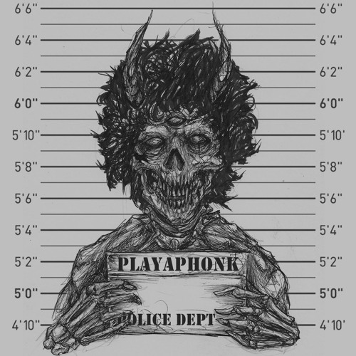
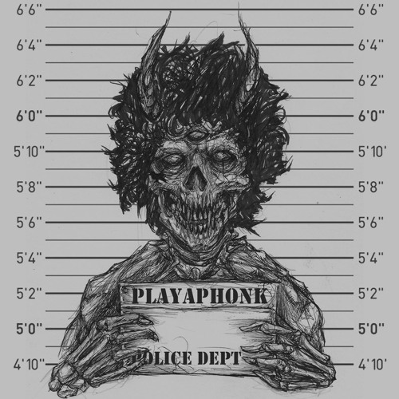

Sobre mim
Oi! Meu nome é Brian, tenho 15 anos, estudo no Senac e sou de Santa Cruz do Sul. Sou alto, MUITO branco, ruivo e já é um prato cheio pra um monte de apelidos carinhosos como: Foguinho, Tocha Olímpica, Edward Cullen, A Luz do Fim do Tunel, Gesso, O Sol, SCP-096, Russo, Vampiro e entre muitos outros :). Agora você vai me conhecer um pouco mais a partir de algumas perguntas a seguir:
Características mais marcantes
Como já foi apresentado antes, sou alto, ruivo, branco e magro, mas isso é apenas de aparência. O restante eu poderia me considerar inquieto, sonhador, muito emotivo, desorganizado em algumas coisas e organizado em outras. Me preocupo demais com a aparência, às vezes sou muito impulsivo e infelizmente sou meio inseguro e me comparo demais com os outros.
Principais interesses
Meus principais interesses são ter uma boa saúde, isso se inclui na academia, tanto no cardio para ter fôlego, quanto na parte da musculação para ter um shape aesthetic e deixar de ser um magrelo seco. Ultimamente quero comprar mais roupas e acessórios para explorar mais meu estilo, porém isso demanda o famoso “din din”, por isso planejo trabalhar daqui a alguns meses.
Pontos fortes
Meus pontos fortes, não gosto de dizer vindo de mim, acredito que é melhor falar sobre isso vindo das pessoas. Vindo delas, falam que eu escrevo bem, sou determinado e dedicado, quando eu coloco algo na cabeça que eu queira fazer ou tenha muita vontade, eu fico naquilo e me aprofundo bastante, sou um bom amigo, romântico quando quero ser e uma ótima companhia.
O que gosta de fazer
O que eu mais gosto de fazer é ouvir música, e em estilos de música pra mim, é bem variado, depende do meu humor no dia também, às vezes escuto Rock (INXS), Power Metal (Angra, Shaman), Phonk (DVRST, Hensonn, INTERWORLD, my!lane, PlayaPhonk) e outros estilos que não sei dizer o gênero (ThxSoMch, Pastel Ghost, The Neighbourhood, Eye Dress, d4vd, Crystal Castles, TV Girl). Gosto muito de ir à academia, olhar filmes, séries, sair de casa às vezes para caminhar ou ir em cafeterias, com ou sem companhia e conversar.


 

Maiores habilidades
Normalmente em sala de aula não tenho um desenvolvimento bom, porém quando eu saio da sala, ouço minha playlist e sem ninguém por perto (sim, eu gosto de me isolar nesses casos), tenho um desenvolvimento muito melhor, com mais foco, considero isso uma habilidade, usando a música e me isolando para me concentrar mais e ficar na minha. Eu consigo me relacionar com as pessoas de forma muito fácil (sou sociável), porém sempre depende do tipo de pessoa em questão de jeito ou opinião, sempre busco respeitar, porém se não me respeitar, eu não respeito, pois respeito é uma via de mão dupla.
O que quer desenvolver em si
O que busco desenvolver em mim primeiramente, é a programação, já que estou no Senac, além de que alguns dos meus amigos já estão mais avançados comparado a mim. A segunda coisa que eu vou desenvolver em mim e que foi comentado antes, é se comparar aos outros, porém desde criança eu faço isso, parece que é uma característica em mim que veio para ficar, vou trabalhar nisso. Irei parar de confiar nas pessoas de forma fácil, eu reparei atualmente que confio muito fácil nas pessoas, algo do tipo, contar segredos meus ou algo que precisa de mais intimidade para ser comentado, já é algo que estou desenvolvendo em mim e já posso dizer que há progresso nesse aspecto, estar mais na minha, ajudou. Eu já melhorei muitas coisas em mim, desde que eu entrei no Senac, fiquei mais na minha, passei a respeitar mais os outros, opiniões e outras questões que antes eu julgava muito e que agora percebo o quão primitivo é fazer isso.
Maiores limitações
Algumas limitações minhas, que considero defeitos a serem corrigidos, incluem em certas ocasiões ter muita pouca paciência e simplesmente explodir, raiva é algo que tenho muito e dependendo das situações ou eventos que ocorrem no cotidiano, posso ser impulsivo e deixar esse sentimento tomar conta de mim. O lado bom é que ultimamente tem sido muito raro e difícil ter raiva, pois os últimos meses têm sido muito bons e posso dizer que alcancei um objetivo de vida que há muito tempo tentei alcançar (sonho realizado).
Sobre o que gosta de conversar
Normalmente gosto de conversar sobre academia, mas quando se trata de conversas abertas, gosto de expor minha opinião em diversos assuntos, ou seja, qualquer tipo de conversa e ver como a pessoa pensa a respeito daquele assunto (a opinião dela). No geral, eu converso sobre tudo.
Causas que gostaria de se envolver
Atualmente não tenho causas com as quais gostaria de me envolver.